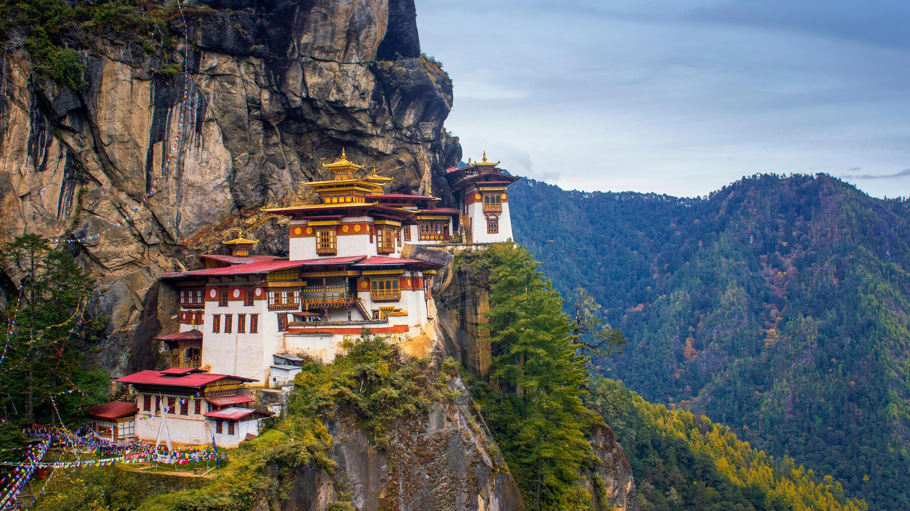
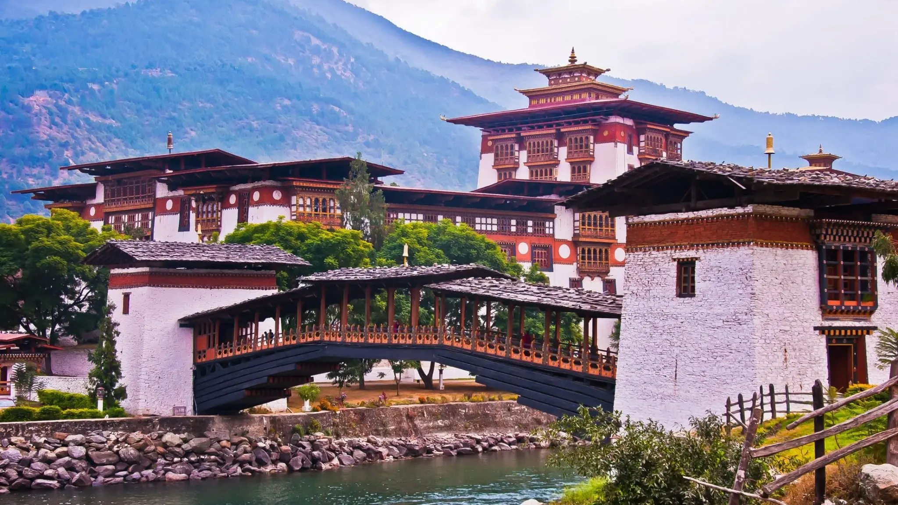
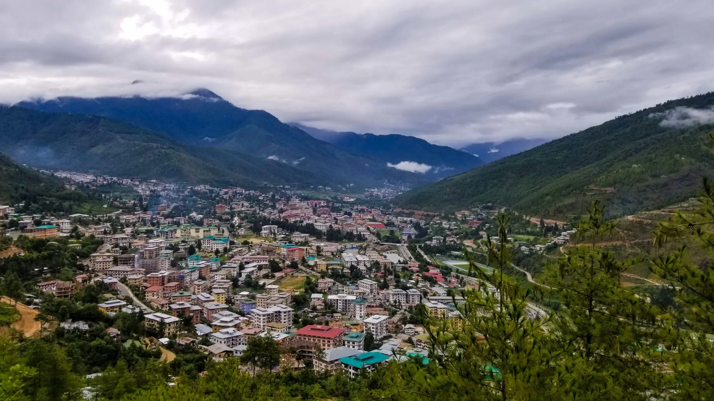
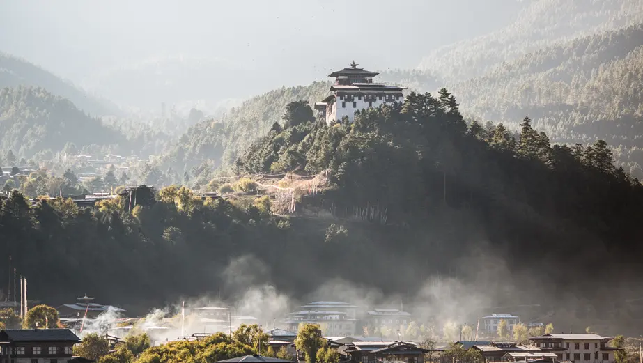
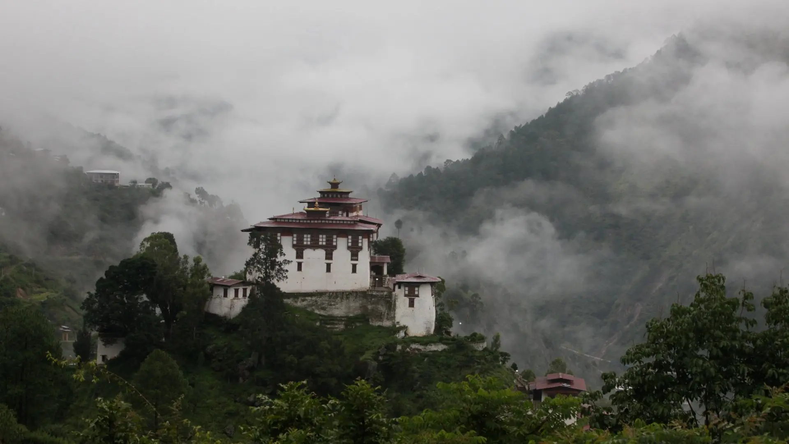

Places to Visite in Bhutan
Paro Taktsang (Tiger's Nest Monastery)
Paro Taktsang, also known as the Tiger's Nest Monastery, is one of the most iconic and revered sites in Bhutan. Perched dramatically on a cliffside approximately 900 meters above the Paro Valley, this sacred monastery offers breathtaking views and a profound spiritual experience.
Highlights
-
Stunning Location
The Paro Taktsang Tiger's Nest Monastery is built into the side of a sheer cliff, making it one of the most visually striking sites in Bhutan. The journey to the monastery itself is an adventure, involving a steep hike through pine forests and past a waterfall.
-
Spiritual Significance
This monastery is one of the most important pilgrimage sites in Bhutan. According to legend, Guru Padmasambhava (Guru Rinpoche) flew to this location on the back of a tigress and meditated in a cave, thus sanctifying the place.
-
Architectural Marvel
The monastery complex consists of four main temples and several residential buildings, all interconnected by staircases carved into the rock. The buildings cling to the cliffs, demonstrating impressive engineering and architectural skills.
- Breathtaking Views
From the monastery, visitors can enjoy panoramic views of the Paro Valley below. The sight of the monastery itself against the backdrop of the valley and mountains is truly awe-inspiring.
-
Cultural Experience
Visiting the Tiger's Nest Monastery offers a deep dive into Bhutanese culture and spirituality. The serene environment and the presence of monks in prayer create an atmosphere of tranquility and devotion.
Punakha Dzong
Punakha Dzong is one of the most stunning and historically significant fortresses in Bhutan, located at the confluence of the Pho Chhu (male) and Mo Chhu (female) rivers. As one of the best-preserved dzongs in Bhutan, it holds immense cultural and architectural importance, making it one of the best tourist attractions in Bhutan.
Highlights
-
Architectural Splendor
Punakha Dzong is renowned for its impressive Bhutanese architecture. The dzong features intricate woodwork, massive courtyards, and towering whitewashed walls adorned with beautiful murals and carvings. Its grandeur is accentuated during the Punakha Tshechu, an annual festival that showcases traditional mask dances and religious rituals.
-
Historical Significance
Built in 1637 by Zhabdrung Ngawang Namgyal, the dzong served as the administrative center and seat of the government until the capital moved to Thimphu in 1955. It is also the site where the first King of Bhutan was crowned in 1907, making it a vital part of Bhutan's history.
-
Spiritual Importance
Punakha Dzong houses sacred relics of the southern Drukpa Kagyu school, including the remains of Zhabdrung Ngawang Namgyal. It is also the winter residence of the Je Khenpo (Chief Abbot) and the central monastic body, reflecting its ongoing religious significance.
- Picturesque Setting
The dzong's location at the confluence of two rivers, against a backdrop of lush green hills and the distant Himalayas, makes it one of the most scenic places in Bhutan. The sight of the dzong reflected in the tranquil waters of the rivers is truly mesmerizing.
-
Photographic Opportunities
The beautiful Punakha Suspension Bridge, which is one of the longest in Bhutan, offers stunning views of the dzong and the surrounding landscape. The dzong itself is a favorite spot for photographers, especially during the spring when the jacaranda trees are in full bloom, adding a splash of purple to the scenery.
Thimphu
Thimphu, the capital city of Bhutan, seamlessly blends tradition and modernity, offering a unique glimpse into the heart of Bhutanese culture. As the largest city in Bhutan, Thimphu is home to a variety of attractions, making it one of the best tourist attractions in Bhutan. From ancient monasteries to contemporary landmarks, Thimphu city attractions cater to all interests.
Highlights
-
Tashichho Dzong
This impressive fortress-monastery is the seat of the Bhutanese government and houses the throne room and offices of the King. Tashichho Dzong, with its stunning architecture and beautiful gardens, is a must-visit for those interested in historic sites in Bhutan.
-
Buddha Dordenma Statue
Standing at 51.5 meters tall, the Buddha Dordenma Statue is one of the largest statues of Buddha in the world. Located on a hilltop overlooking Thimphu, it offers panoramic views of the city and the surrounding mountains, making it a prime spot for photography and contemplation.
-
National Memorial Chorten
Built in memory of the third King of Bhutan, Jigme Dorji Wangchuck, the National Memorial Chorten is a revered religious site. Locals and visitors alike come here to circumambulate the chorten and spin the prayer wheels, seeking blessings and peace.
- Changangkha Lhakhang
This 12th-century monastery, perched on a hilltop, is one of the oldest temples in Thimphu. It is a popular pilgrimage site for Bhutanese parents who bring their newborns here for blessings and names.
-
Royal Textile Academy
As Bhutan is renowned for its intricate textiles, a visit to the Royal Textile Academy is highly recommended. Here, you can learn about the rich textile heritage of Bhutan, see live weaving demonstrations, and admire exquisite fabric creations.
Bumthang Valley
The Bumthang Valley, often referred to as the spiritual heartland of Bhutan, is a region rich in ancient temples, monasteries, and cultural heritage. Comprising four main valleys—Chokhor, Tang, Ura, and Chhume—Bumthang is a must-visit for those seeking to explore the spiritual and cultural essence of Bhutan. As one of the best tourist attractions in Bhutan, Bumthang offers a unique and immersive experience for travelers.
Highlights
-
Jambay Lhakhang
Built in the 7th century by the Tibetan King Songtsen Gampo, Jambay Lhakhang is one of the oldest temples in Bhutan. It hosts the annual Jambay Lhakhang Drup, a vibrant festival featuring traditional mask dances and fire rituals.
-
Kurje Lhakhang
This sacred site is where Guru Rinpoche meditated and left an imprint of his body on a rock, hence the name Kurje (body imprint). The monastery complex consists of three main temples, each representing different periods of Bhutanese history.
-
Tamshing Lhakhang
Founded in 1501 by the famous saint Pema Lingpa, Tamshing Lhakhang is known for its ancient wall paintings and as a center for the Nyingma school of Buddhism. Visitors can experience the traditional practice of circumambulating the temple while wearing iron chains, a ritual believed to purify sins.
- Mebar Tsho (Burning Lake)
This sacred lake is associated with the legendary treasure hunter Pema Lingpa. According to legend, he discovered hidden treasures here by diving into the lake with a burning butter lamp, which emerged still burning. It is a popular pilgrimage site for Bhutanese and visitors alike.
-
Tang Valley
This remote valley is home to the Ogyen Choling Palace Museum, which offers insights into the lifestyle and culture of Bhutanese nobility. The Tang Valley is also known for its scenic beauty and opportunities for trekking.
Phobjikha Valley (Gangtey)
The Phobjikha Valley, also known as the Gangtey Valley, is a glacial valley in Bhutan that is renowned for its breathtaking natural beauty and rich biodiversity. Nestled in the Black Mountains, this serene valley is one of the most picturesque and ecologically important areas in Bhutan, making it one of the best tourist attractions in Bhutan.

Highlights
-
Gangtey Monastery
The Gangtey Monastery, also known as Gangtey Goenpa, is one of the main centers of the Nyingma school of Buddhism in Bhutan. Founded in the 17th century, the monastery offers stunning views of the valley and serves as an important religious and cultural site.
-
Black-Necked Cranes
Every winter, the Phobjikha Valley becomes the winter home for the endangered black-necked cranes that migrate from Tibet. These majestic birds are revered by the local people and are a key attraction for bird watchers and nature enthusiasts.
-
Nature Trails
The valley offers several scenic hiking trails, including the popular Gangtey Nature Trail. This easy hike takes you through pine forests, small villages, and open meadows, offering beautiful views of the valley and opportunities to observe local wildlife.
- Cultural Experiences
The Phobjikha Valley is home to traditional Bhutanese villages where visitors can experience rural Bhutanese life. The valley's inhabitants are known for their warm hospitality and traditional crafts, such as weaving and wood carving.
-
Conservation Efforts
The Phobjikha Valley is a prime example of successful conservation efforts in Bhutan. The Royal Society for Protection of Nature (RSPN) has been actively involved in preserving the valley's natural environment and promoting sustainable tourism.
Haa Valley
The Haa Valley, one of Bhutan's most picturesque and least-visited regions, offers a serene and tranquil escape into nature and tradition. Nestled in the western part of Bhutan, close to the border with Tibet, the valley is a hidden gem, rich in history, culture, and natural beauty. As one of the best tourist attractions in Bhutan, Haa Valley is a must-visit for those seeking to experience the country's unspoiled landscapes and traditional way of life.

Highlights
-
Lhakhang Karpo (White Temple)
The Lhakhang Karpo, or White Temple, is one of the two main temples in the Haa Valley. It is known for its beautiful architecture and serene atmosphere. According to legend, the temple was built on the site where a white pigeon landed, signifying a sacred location.
-
Lhakhang Nagpo (Black Temple)
The Lhakhang Nagpo, or Black Temple, complements its white counterpart. This temple is built on the site where a black pigeon landed. Together, these temples symbolize the harmonious balance between good and evil.
-
Chele La Pass
At 3,988 meters, Chele La Pass is one of the highest motorable passes in Bhutan and offers stunning panoramic views of the Haa Valley on one side and the Paro Valley on the other. The pass is a popular spot for hiking and photography.
- Traditional Villages
The Haa Valley is dotted with traditional Bhutanese villages that offer a glimpse into the country’s rural lifestyle. These villages are known for their traditional architecture, vibrant festivals, and warm hospitality.
-
Haa Summer Festival
This annual festival showcases the unique culture, traditions, and lifestyle of the nomadic herders of Haa. The festival features traditional sports, Bhutanese cuisine, and cultural performances, providing an immersive cultural experience.
Dochula Pass
Dochula Pass is one of Bhutan's most stunning and accessible mountain passes, located on the road between Thimphu and Punakha. At an altitude of 3,100 meters, it offers breathtaking panoramic views of the Himalayan mountain range. This pass is not only a scenic viewpoint but also a place of spiritual significance, making it one of the best tourist attractions in Bhutan.

Highlights
-
Druk Wangyal Chortens
The pass is adorned with 108 memorial chortens, known as the Druk Wangyal Chortens, which were built in honor of Bhutanese soldiers who died in the 2003 military operations against insurgents. These chortens are beautifully arranged in concentric circles, creating a serene and sacred atmosphere.
-
Dochula Druk Wangyel Festival
Held annually in December, this festival celebrates Bhutanese culture and military triumphs. It features traditional mask dances and cultural performances against the backdrop of the stunning Himalayan peaks.
-
Panoramic Views
On clear days, visitors can enjoy spectacular views of the snow-capped Himalayas, including some of Bhutan’s highest peaks such as Gangkar Puensum. The sight of the mountains rising majestically above the clouds is truly awe-inspiring.
- Dochula Nature Trail
For nature lovers, the Dochula Nature Trail offers a peaceful hike through lush forests, providing opportunities to spot various bird species and enjoy the natural beauty of the region. The trail is relatively easy and suitable for all fitness levels.
-
Druk Wangyal Lhakhang
This temple, located near the chortens, is a stunning example of Bhutanese architecture and artwork. It was built to honor the Fourth Druk Gyalpo and the soldiers who participated in the 2003 military operations. The temple's intricate murals and serene environment make it a worthwhile visit.
Jakar
Jakar, often referred to as the "Little Switzerland of Bhutan," is a charming town located in the heart of the Bumthang Valley. Known for its scenic beauty, historic sites, and spiritual significance, Jakar is a must-visit destination for anyone exploring Bhutan. As one of the best tourist attractions in Bhutan, Jakar offers a blend of culture, history, and natural beauty.

Highlights
-
Jakar Dzong
Also known as the "Castle of the White Bird," Jakar Dzong is perched on a ridge overlooking the Chokhor Valley. Built in 1549, this impressive fortress serves as the administrative center of Bumthang and offers stunning views of the surrounding landscape. The dzong's architecture and historical significance make it a key attraction for visitors interested in historic sites in Bhutan.
-
Kurje Lhakhang
One of the most sacred monasteries in Bhutan, Kurje Lhakhang is believed to house the body imprint of Guru Rinpoche, who is credited with bringing Buddhism to Bhutan. The complex consists of three temples, each representing different periods of Bhutanese history, and is a major pilgrimage site for Buddhists.
-
Jambay Lhakhang
Built in the 7th century by the Tibetan King Songtsen Gampo, Jambay Lhakhang is one of the oldest temples in Bhutan. It is renowned for its annual Jambay Lhakhang Drup festival, which features traditional mask dances and rituals, including the fire ceremony known as Mewang.
- Mebar Tsho (Burning Lake)
This sacred lake is associated with the legendary treasure hunter Pema Lingpa. According to legend, he discovered hidden treasures here by diving into the lake with a burning butter lamp, which emerged still burning. Mebar Tsho is a popular pilgrimage site and a beautiful spot for reflection and meditation.
-
Tamshing Lhakhang
Founded in 1501 by the famous saint Pema Lingpa, Tamshing Lhakhang is known for its ancient wall paintings and traditional Buddhist practices. Visitors can experience the unique ritual of circumambulating the temple while wearing iron chains, believed to purify sins.
Paro
Paro is one of the most scenic and historically significant towns in Bhutan, located in the western part of the country. This charming town is the gateway to some of Bhutan's most iconic landmarks and cultural sites, making it one of the best tourist attractions in Bhutan. Known for its picturesque landscapes, ancient monasteries, and traditional architecture, Paro offers a rich and immersive experience for visitors.
.webp)
Highlights
-
Paro Taktsang (Tiger's Nest Monastery)
The Paro Taktsang Tiger's Nest Monastery is arguably the most famous and breathtaking site in Bhutan. Perched on a cliffside about 900 meters above the Paro Valley, this sacred monastery is a must-visit for its spiritual significance and stunning views. The challenging hike to the monastery adds to the adventure, making it one of the must-see destinations in Bhutan.
-
Rinpung Dzong
Also known as the "Fortress of the Heap of Jewels," Rinpung Dzong is a magnificent example of Bhutanese architecture. This fortress-monastery is the administrative and religious center of the Paro district. It is famous for its beautiful wooden galleries, towering walls, and the annual Paro Tshechu festival, which features colorful mask dances and religious rituals.
-
Ta Dzong (National Museum of Bhutan)
Originally built as a watchtower for Rinpung Dzong, Ta Dzong now houses the National Museum of Bhutan. The museum offers a fascinating collection of Bhutanese art, artifacts, and exhibits on the country's rich cultural heritage and natural history.
- Kyichu Lhakhang
One of the oldest and most sacred temples in Bhutan, Kyichu Lhakhang was built in the 7th century by the Tibetan King Songtsen Gampo. The temple is a peaceful place of worship and an important pilgrimage site for Buddhists.
-
Drukgyel Dzong
Although in ruins, Drukgyel Dzong holds significant historical importance as it was built to commemorate Bhutan's victory over Tibetan invaders in the 17th century. The site offers stunning views of the surrounding mountains and is a great spot for photography and exploration.
Lhuentse
Lhuentse is one of the most remote and culturally significant districts in Bhutan, located in the northeastern part of the country. Known for its stunning landscapes, traditional weaving, and rich history, Lhuentse is a hidden gem that offers a unique glimpse into Bhutan's cultural heritage. As one of the best tourist attractions in Bhutan, Lhuentse is a must-visit for those looking to explore the less-trodden paths of the kingdom.
Highlights
-
Lhuentse Dzong
Perched on a hilltop overlooking the Kurichu River, Lhuentse Dzong is a majestic fortress with significant historical and religious importance. Built in the 17th century, this dzong serves as the administrative and monastic center of the district. The dzong's strategic location offers panoramic views of the surrounding valleys and mountains.
-
Khoma Village
Known for its exquisite handwoven textiles, Khoma Village is a center of traditional Bhutanese weaving. The women of Khoma are renowned for producing intricate and colorful Kishuthara (silk textiles), which are highly prized throughout Bhutan. Visitors can observe the weavers at work and purchase these beautiful handmade items.
-
Kurje Lhakhang
Located in the heart of the Bumthang Valley, Kurje Lhakhang is a sacred site where Guru Rinpoche meditated and left his body imprint on a rock. The temple complex consists of three main buildings, each representing different periods of Bhutanese history and spirituality.
- Gangzur Village
Famous for its traditional pottery, Gangzur Village is another cultural highlight in Lhuentse. The local artisans create a variety of earthenware products, including pots, pans, and other household items. Visitors can watch the potters at work and learn about this ancient craft.
-
Singye Dzong
For those seeking adventure and spiritual solace, a trek to Singye Dzong is a must. This remote monastery, associated with Guru Rinpoche, is located high in the mountains and requires a challenging trek through rugged terrain. The journey is rewarded with breathtaking views and a profound sense of tranquility.